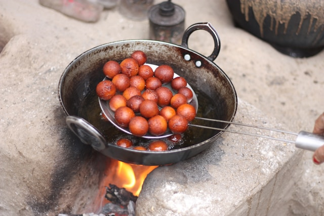

Gulab Jamun

Description
Gulab Jamun is a popular Indian dessert made of milk solids, sugar, and flour. The sweet dough is shaped into small balls, deep-fried until golden brown, and then soaked in a fragrant rose-flavored sugar syrup. Gulab Jamun is traditionally made with **khoya** (reduced milk), although modern versions often use milk powder or ready-made Gulab Jamun mix.
Ingredients:
- Khoya (or milk powder)
- All-purpose flour (maida)
- Warm milk
- Ghee or oil (for frying)
- Sugar
- Water
- Rose water or cardamom (for flavor)
Steps:
- Make a smooth dough by mixing khoya, flour, and milk. Add a little warm milk at a time to form a soft dough.
- Divide the dough into small balls, ensuring they are crack-free.
- Heat ghee or oil in a pan for deep frying. Gently drop the balls into the hot oil and fry them until golden brown.
- In another pan, prepare sugar syrup by boiling water and sugar together, adding a few drops of rose water or cardamom for flavor.
- Once the Gulab Jamuns are fried, soak them in the warm sugar syrup for about 30 minutes before serving.